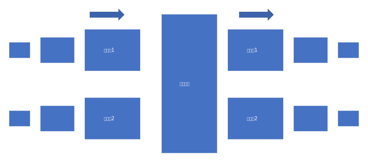
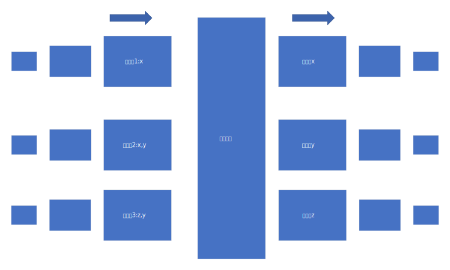

1
a
| 目的主机 | 接口 |
|---|---|
| H3 | 3 |
b
首先，路由表长这样：
2
3
4
5
6
7
8
9
10
11
12
13
14
15
16
17
18
19
20
21
22
23
24
25
26
27
> ===========================================================================
> 活动路由:
> 网络目标 网络掩码 网关 接口 跃点数
> 0.0.0.0 0.0.0.0 192.168.3.1 192.168.3.2 35
> 127.0.0.0 255.0.0.0 在链路上 127.0.0.1 331
> 127.0.0.1 255.255.255.255 在链路上 127.0.0.1 331
> 127.255.255.255 255.255.255.255 在链路上 127.0.0.1 331
> 169.254.0.0 255.255.0.0 在链路上 169.254.122.102 281
> 169.254.122.102 255.255.255.255 在链路上 169.254.122.102 281
> 169.254.255.255 255.255.255.255 在链路上 169.254.122.102 281
> 172.28.49.80 255.255.255.240 在链路上 172.28.49.81 5256
> 172.28.49.81 255.255.255.255 在链路上 172.28.49.81 5256
> 172.28.49.95 255.255.255.255 在链路上 172.28.49.81 5256
> 192.168.3.0 255.255.255.0 在链路上 192.168.3.2 291
> 192.168.3.2 255.255.255.255 在链路上 192.168.3.2 291
> 192.168.3.255 255.255.255.255 在链路上 192.168.3.2 291
> 224.0.0.0 240.0.0.0 在链路上 127.0.0.1 331
> 224.0.0.0 240.0.0.0 在链路上 169.254.122.102 281
> 224.0.0.0 240.0.0.0 在链路上 192.168.3.2 291
> 224.0.0.0 240.0.0.0 在链路上 172.28.49.81 5256
> 255.255.255.255 255.255.255.255 在链路上 127.0.0.1 331
> 255.255.255.255 255.255.255.255 在链路上 169.254.122.102 281
> 255.255.255.255 255.255.255.255 在链路上 192.168.3.2 291
> 255.255.255.255 255.255.255.255 在链路上 172.28.49.81 5256
> ===========================================================================
>
网络目标就是目的主机，掩码、网关不考虑，接口没有用数字标识，而是采用了所对应的ip地址。
目的主机 接口 H3 3 H3 4 所以这样并不可以。
没有答案，因为路由表中的字段并没有包含源主机的字段，所以路由器无法区分。
2

a
不能，共享总线的情况下同一时刻只能有一个端口对总线进行读/写。
b
不能，经过共享总线系统。
c
不能，即使纵横式的是非阻塞的，但是这仅仅对于一个端口没有包进行传输的情况。
如果在同一时刻，有多个输入端口想向同一输出端口输出时，构成竞争，只能传送一个分，其他分组需等待，因为一条给定总线在某一时刻只能传输一个分组。
3
Network delay including four parts:
Processing delay - time routers take to process the packet header.
Queuing delay - time the packet spends in routing queues
Transmission delay - time it takes to push the packet’s bits onto the link.
Propagation delay - time for a signal to reach its destination.
————————————————
版权声明：本文为CSDN博主「zhangskd」的原创文章，遵循 CC 4.0 BY-SA 版权协议，转载请附上原文出处链接及本声明。
原文链接：https://blog.csdn.net/zhangskd/article/details/18224897
在本题中，D应当代表排队时延。
- 在内存和总线结构中，无法并发，只能排队，最大排队时延最大，为$(n-1)\times D$
- 在纵横式时，由于是并发，无需排队，所以最大排队时延为$0$。
如何算出来的？
就像火车过桥时，车最后出来才算火车把桥过完一样，最大排队时延应当从输入端口接收到第一个分组起，到最后一个分组离开交换结构止。
现在有$n$个分组传送进来，内存结构和总线结构，每次只能发一个，发一个的时延为$D$，最后一个发时它已经等了$(n-1)$次了。
4

最小时隙为3：
- 时隙1：
- i1->x
- i2->y
- i3：竞争，无法发送。
- 时隙2：
- i1：空闲。
- i2->x
- i3->y
- 时隙3：
- i1,i2空闲。
- i3->z
最大也是3，因为i2,i3总是会竞争，导致浪费一个时隙。
假设，i3第一个分组加个x，会如何？
5
翻译成十进制：
起始 终止 链路接口 224.0.0.0 224.63.255.255 0 224.64.0.0 224.64.255.255 1 224.65.0.0 225.65.255.255 2 其他 其他 3
a
| 序号 | 前缀匹配 | 链路接口 |
|---|---|---|
| 1 | 11100000 00 | 0 |
| 2 | 11100000 01000000 | 1 |
| 3 | 1110000 | 2 |
| 4 | 11100001 1(225.128) | 3 |
| 5 | 其他 | 3 |
对于第四存疑。
b
(1)->5->3
(2)->3->2
(3)->4->3
6
| 起始 | 终止 | 链路接口 |
|---|---|---|
| 00000000 | 00111111 | 0 |
| 01000000 | 01011111 | 1 |
| 01100000 | 01111111 | 2 |
| 10000000 | 10111111 | 2 |
| 11000000 | 11111111 | 3 |
接口0：$2^6=64$
接口1：$2^5=32$
接口2：$2^5+2^6=96$
接口3：$2^6=64$
7
| 起始 | 终止 | 链路接口 | 地址个数 |
|---|---|---|---|
| 11000000 | 11011111 | 0 | 32 |
| 10000000 | 10111111 | 1 | 64 |
| 11100000 | 11111111 | 2 | 32 |
| 00000000 | 01100000 | 3 | 128 |
8
223.1.17=11011111 00000001 00010001 00000000
11011111 00000001 00010001 01000000
| 60->$2^6 =64$ | 11011111 00000001 00010001 01000000 |
|---|---|
| 90->$2^7=128$ | 11011111 00000001 00010001 10000000 |
| 12->$2^4=16$ | 11011111 00000001 00010001 10010000 |
223.1.17.64/26 子网1
223.1.17.128/25 子网2
223.1.17.160/27 子网3
9
200.23.16/21 0
200.23.24/24 1
200.23.24/21 2
otherwise 3
10
Destination Address Link Interface
11100000 00 (224.0/10) 0
11100000 01000000 (224.64/16) 1
1110000 (224/8) 2
11100001 1 (225.128/9) 3
otherwise 3
11
a
128.119.40.128到128.119.40.191
b
128.119.40.64/28
128.119.40.80/28
128.119.40.96/28
128.119.40.112/28
12
a
1111 1110 0000 0000-1111 1111 1111 1111=512
A:250(8), B:120(7), C:120(7), D:2(1),E2(1),F:2(1)
- 1111 1110 (256)A
- 1111 1110 0000 00xx (4)F
- 1111 1110 0000 011x(2)D
- 1111 1110 0000 010x(2)E
- 1111 1111 0000 0000 - 1111 1111 1111 1111(256)
- 1111 1111 0(128)B
- 1111 1111 1(128)C
Subnet A: 214.97.255/24 (256 addresses)
Subnet B: 214.97.254.0/25 - 214.97.254.0/29 (128-8 = 120 addresses)
Subnet C: 214.97.254.128/25 (128 addresses)
Subnet D: 214.97.254.0/31 (2 addresses)
Subnet E: 214.97.254.2/31 (2 addresses)
Subnet F: 214.97.254.4/30 (4 addresses)
b
Router 1
Longest Prefix Match Outgoing Interface
11010110 01100001 11111111 Subnet A
11010110 01100001 11111110 0000000 Subnet D
11010110 01100001 11111110 000001 Subnet F
Router 2
Longest Prefix Match Outgoing Interface
11010110 01100001 11111111 0000000 Subnet D
11010110 01100001 11111110 0 Subnet B
11010110 01100001 11111110 0000001 Subnet E
Router 3
Longest Prefix Match Outgoing Interface
11010110 01100001 11111111 000001 Subnet F
11010110 01100001 11111110 0000001 Subnet E
11010110 01100001 11111110 1 Subnet C
13
略
14
2400字节，其中有效载荷为2380字节。
mtu为700，有效载荷为700-20=680。分为4片，最后一片携带340字节有效载荷。
| 片数 | 标志 | 片偏移 | 标识号 | 数据报长度 |
|---|---|---|---|---|
| 1 | 1 | 0 | 422 | 700 |
| 2 | 1 | 680 | 422 | 700 |
| 3 | 1 | 1360 | 422 | 700 |
| 4 | 0 | 1700 | 422 | 360 |
片偏移：IP数据报被分片后，各片数据区在原来IP数据区中的位置用13位片偏移来表示。
片未完标志：如果被置1，说明该数据报不是分片后的最后一个数据报，最后一个数据报的该位被置0。
标识：一个数据报的所有分片具有相同的标识。在IP数据报头部中，标识用16位二进制数表示，它唯一地标识主机发送的每一份数据报。在一个数据报被分片时，每个分片仅把数据报“标识”字段的值原样复制一份。
15
将题中的$MB$理解为$MiB$。即 $1MiB=2^{20}B$。
总携带数据为：$5MB$。
数据报有效载荷为：$1,500-20-20=1,460B$。
则须分片：$5MB \div 1,460B=3,592 $。
16
家庭ip:
192.168.1.1-192.168.1.4，路由器链路接口为192.168.1.5。
| WAN | LAN |
|---|---|
| 24.34.112.235:4001 | 192.168.1.1:3345 |
| 24.34.112.235:4002 | 192.168.1.1:3346 |
| 24.34.112.235:4003 | 192.168.1.1:3347 |
| 24.34.112.235:4004 | 192.168.1.1:3348 |
17
a
可以，由于数是随机产生的，之后是顺序增长的，所以我们可以收集所有包的标识号，并构造出x-y散列图，观察能够得到多少直线，就能够得到。
b
有极小的可能可以，计算机中的数据是伪随机的，只要掌握产生随机数所用到的算法，参数，依旧可以得到，虽然有很大的困难。
18
可以，具体实现见TCP协议点对点（P2P）通讯（或者说NAT穿越）的实现方案。
19
h5或h6发往h1,h2从o2->i1
| Match | Action |
|---|---|
| Ingress Port=1; ip src=10.3.0.*; ip dst=10.1.*.* | forward(2) |
| Ingress Port=2; ip src=10.1.*.*; ip dst=10.3.*.* | forward(1) |
| Ingress Port=1; ip dst=10.2.0.3 Ingress Port=1; ip dst=10.2.0.4 Ingress Port=2; ip dst=10.2.0.3 Ingress Port=2; ip dst=10.2.0.4 |
forward(3) forward(4) forward(3) forward(4) |
| Ingress Port=3 Ingress Port=4 |
forward(4) forward(3) |
20
| Match | Action |
|---|---|
| Ingress Port=3; ip dst=10.1.*.* Ingress Port=3; ip dst=10.3.*.* |
forward(2) forward(2) |
| Ingress Port=4; ip dst=10.1.*.*Ingress Port=4; ip dst=10.3.*.* | forward(1)forward(1) |
21
s1
| Match | Action |
|---|---|
| ip src=10.2.*.* ip dst=10.1.0.1 ip src=10.2.*.* ip dst=10.1.0.2 |
forward(2) forward(3) |
| ip src=10.2.*.*; ip dst=10.3.*.* | forward(1) |
s3
| Match | Action |
|---|---|
| IP Src = 10.2.*.*; IP Dst = 10.3.0.6 IP Src = 10.2.*.*; IP Dst = 10.3.0.5 |
Forward(1) Forward(2) |
| IP Src = 10.2.*.*; IP Dst = 10.1.*.* | Forward(3) |
22
a
| Match | Action |
|---|---|
| IP Src = 10.1.0.1; IP Dst = 10.2.0.3 | Forward(3) |
| IP Src = 10.1.0.1; IP Dst = 10.2.0.4 | Forward(4) |
| IP Src = 10.3.0.6; IP Dst = 10.2.0.3 | Forward(3) |
| IP Src = 10.3.0.6; IP Dst = 10.2.0.4 | Forward(4) |
b
| Match | Action |
|---|---|
| IP Src =.*.*.*.*; IP Dst = 10.2.0.3; port= TCP | Forward(3) |
| IP Src =.*.*.*.*; IP Dst = 10.2.0.4; port= TCP | Forward(4) |
c
| Match | Action |
|---|---|
| IP Src =.*.*.*.*; IP Dst = 10.2.0.3 | Forward (3) |
d
| Match | Action |
|---|---|
| IP Src = 10.1.0.1; IP Dst = 10.2.0.3;port = UDP | Forward(3) |